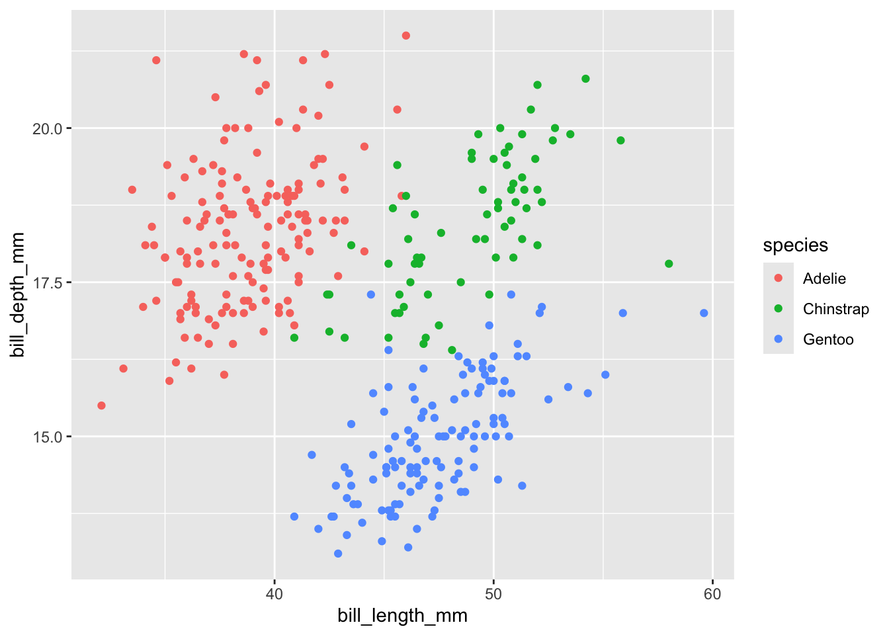

pacman::p_load(palmerpenguins) 4 Grammar of Graphics
Class Objectives
- Learn the basic ideas behind the “grammar of graphics”
- Make scatter plots using the
ggplot2package
4.1 Why so much focus on Graphs?
As you can see from the syllabus, we will spend a lot of time on making graphs. Why? Because humans are visual beings. There’s a reason why The New York Times invests in top-tier graphic designers to craft their visuals. A well-designed graph can illuminate complex data in a way that words alone often can’t.
Now, don’t get me wrong. Graphs aren’t a replacement for text. We still need words to convey intricate ideas and the necessary nuances that come with any scientific discourse. But the sad truth is that most people won’t read your entire paper, they will likely skim it. So if you want your work to resonate, you need to make your key findings as clear as possible. In a world overflowing with information, effective visuals are becoming more and more important.
The realm of data visualization has exploded with new tools and frameworks. Among them, ggplot2 stands out. Why focus on ggplot2? Because it encapsulates the right approach to thinking about graphics. Much like learning the grammar of a new language, understanding the “grammar of graphics” will make your visualizations more structured and easier.
4.2 Crafting Our First Graph with ggplot2
Then we quickly visualize the data using the ggplot2 package. Let us load the penguins dataset from the palmerpenguins package, as we learnt last week.
Suppose we’re curious about the relationship between xxx. In the palmerpenguins dataset, these are represented by bill_length_mm and bill_depth_mm, respectively. Here’s how we can visualize this relationship using ggplot2:
library(ggplot2)
ggplot(
data = penguins,
aes(x = bill_length_mm,
y = bill_depth_mm)
) +
geom_point()- 1
-
Load the
ggplot2package. - 2
- Specify the dataset used in the plot.
- 3
-
Define the x-axis variable as
bill_length_mm. - 4
-
Define the y-axis variable as
bill_depth_mm. - 5
- Add a layer of points to the plot.

When you run this code, you should see a scatter plot of flipper length against body mass. The geom_point() function adds a layer of points to the plot. This is the most basic type of plot you can make with ggplot2.
Let us brek the code piece by piece:
- The
+operator is used to add layers to the plot. This is a common pattern inggplot2. aes()is used to define the aesthetics of the plot. Here, we map the flipper length to the x-axis and body mass to the y-axis.geom_point()belong to a large class ofgeom_*functions that define what you add upon to the graph.
Once you understand these concepts, it becomes quite intuitive. When we want to show the scatter okits, we always need to have the data, define what goes on the x-axis and y-axis, and then what to add to the plots (points).
4.3 Tuning our Plot
Our plot is not entirely useful. What about differenet species? To do this, we can use different colors to different them. What are other aesthetics that we can define in a plot? Here are some of the most common ones: - color - shape
Let’s see how we can use these aesthetics in our plot:
ggplot(
data = penguins,
aes(
x = bill_length_mm,
y = bill_depth_mm,
color = species,
)) +
geom_point() - 1
-
We map the
speciesvariable to the color aesthetic.

Another quick comment before we move on, the default theme is not good. We can change it by adding a theme to the plot. Here’s how you can do it:
ggplot(
data = penguins,
aes(
x = bill_length_mm,
y = bill_depth_mm,
color = species,
shape = species
)) +
geom_point() - 1
- Differentiate the species by the shape of the points.

4.4 Do not use the default theme
The default theme is not good. Apart from beuty, it used a grey backgound, which wastes a lot of ink in printing. We can change it by adding a theme to the plot. Here’s how you can do it:
ggplot(
data = penguins,
aes(
x = bill_length_mm,
y = bill_depth_mm,
color = species,
shape = species
)) +
geom_point() +
theme_minimal()- 1
-
Apply the
theme_minimal()theme to the plot.
In general, the theme_minimal() theme is a good starting point for most plots. It removes the background gridlines and uses a white background, which is easier on the eyes and saves ink when printing. There are multiple themes that come with ggplot2 (you can find them here). We will explore what theme_*() are in more detail in future classes. For now, just remeber that you can change the theme of your plot by adding a theme_*() function to the plot.
Why is this a default theme?
Of course, this is far from a publication-ready plot. But it’s a good start. We will learn more about how to customize our plots in future classes.
4.5 Excersise
4.5.1 Exercise 1: A straightforward plot
- Try to plot the relationship between Body mass (
body_mass_g) and Bill depth (bill_depth_mm) for thepenguinsdataset. Use thespeciesvariable to color the points. - Choose your favorite theme.
4.5.2 Exercise 2: Why you always need to plot your data.
We will explore another dataset
pacman::p_load(datasauRus)
The downloaded binary packages are in
/var/folders/99/f2bl8dr17qlcm389nsdmx7qm0000gn/T//RtmpJnpiUL/downloaded_packages
datasauRus installedWarning: package 'datasauRus' was built under R version 4.2.3We see that
datasaurus_dozen |>
ggplot(aes(x = x, y = y, colour = dataset)) +
geom_point() +
theme_minimal() +
facet_wrap(vars(dataset)) +
labs(color = "Dataset")